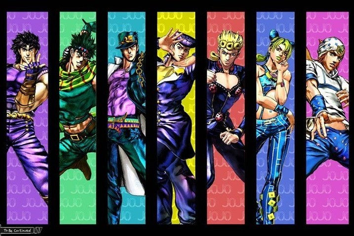
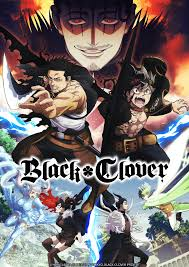
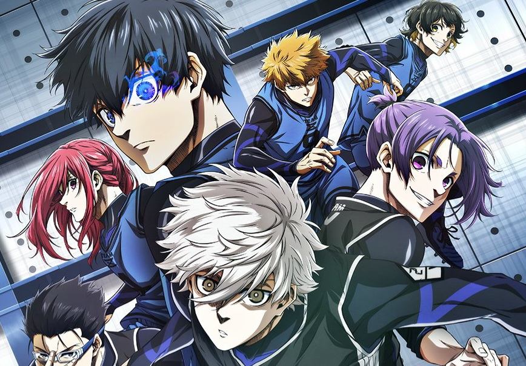

Animes que me Gustan
Me gusta el anime porque combina historias profundas con una animación única que no encuentro en otros medios. Me permite explorar mundos imaginarios, personajes bien desarrollados y temas que van desde lo emocional hasta lo filosófico. Además, disfruto cómo mezcla acción, drama y humor de una manera que mantiene mi interés episodio tras episodio.
Mis animes personales favoritos son:
1. JoJo's Bizarre Adventure
Una serie que sigue a la familia Joestar a través de generaciones, donde cada heredero enfrenta amenazas sobrenaturales con habilidades únicas llamadas Stands. Famosa por su estilo exagerado, poses dramáticas y combates creativos.
2. Black Clover
Sigue la historia de Asta, un joven sin magia en un mundo donde todos la tienen. A pesar de ello, busca convertirse en el Rey Mago, enfrentando poderosos enemigos con pura determinación y una espada anti-magia. Acción, amistad y magia en un mundo fantástico.
3. Blue Lock
Un anime deportivo centrado en el fútbol. Tras el fracaso de Japón en el Mundial, se lanza un programa extremo para crear al delantero más egoísta y efectivo del país. Yoichi Isagi y otros jóvenes compiten en intensos desafíos psicológicos y físicos para destacar.
